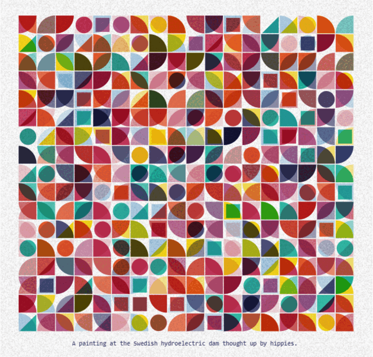

Dillan D.
Simmons
Artist / Writer / Simmons Farm / Engineer Manager at Microsoft Learn
About
I'm an artist, writer, general tinkerer, and Software Engineer Manager at Microsoft Q&A. Based in Seattle Washington. I've had the opportunity to work on a number of great projects and my work focuses on bringing design and development together to build functional and visually interesting experiences. I started developing as a hobby in the early 2000's and have been a professional engineer for the past 10+ years. While I came up on the front-end (JavaScript, Typescript, Node, CSS/SASS), I work in back-end and devops code as well and now focus on management and process (especially AI in engineer workflows).Art
Artwork on fxhash , objkt | Experiments on CodePen | Pen Plots

Artistically I've worked heavily in printing (letterpress / relief) and creative writing. Over the past few years I have started bring these methods into digital art created with code. Seeing the value that my professional skills (code) bring to my art has been mesmerizing and lots of fun. Most of my work falls under the category of generative art, meaning the code will output a (nearly) endless array of outputs based on a random hash value. Above is a small selection of different works.
Other notes
Outside of the 9 to 5, I have a young son, work on a number of side projects, and due to my proximity to great trout fisheries here in Washington, you can find me fly fishing many weekends.I'm also an avid reader and movie watcher. Here is my letterboxd. Below is a list of some books I really enjoyed this year+++ (need to read more): Small Things Like These , Snow Country , Mountain Air: Life of Gordon Stuart, Mountain Man of the North Cascades , Let's Go (So We Can Get Back) , The Silmarillion , Men Without Women , The Sailor Who Fell from Grace with the Sea , The Penguin Book of Japanese Short Stories , Zen in the Art of Writing , Hear the Wind Sing + Pinball , Norwegian Wood , Leaving the Atocha Station , Klara and the Sun , The Sea Around Us , Island Year , A Visit from the Goon Squad , Cities of the Plain: Border Trilogy (3/3) , LESS , When We Were Orphans , Voices from Chernobyl: The Oral History of a Nuclear Disaster , The Road to Wigan Pier , Jesus' Son , Brown Dog , All Quiet on the Western Front , The North Cascadians , Storm of Steel , The Sleepwalkers , Barbarian Days , The Apple Grower , Player Piano , Goodbye to All That , Hard-Boiled Wonderland and the End of the World , A Wild Sheep Chase , The Buried Giant , History of Fly-Fishing in Fifty Flies , Let My People Go Surfing: The Education of a Reluctant Businessman .